- Театр — это я.
- Шекспир
Театр — это игра, фантазия, фантoм.
Это и зеркало жизни, но кривое, точнее — живое.
«Искусство — это зеркало, которое спешит, подобно часам». (Пикассо)
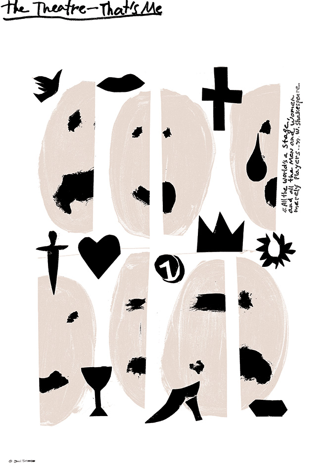
62.
В этих нескольких следах кисти зашифрован целый мир символов, за которыми следует нескончаемая череда ассоциаций, воспоминаний, эмоций… Птица, губы, крест; Маска, глаза, язык; Сердце, корона, воротник; Кинжал, рюмка, дамская туфля… Они принадлежат: весёлому глупцу, скептику, печальному Пьеро, хитрому дебилу, мыслителю, слепому…
Если расшифровать эти символы, то получим перечень всех человеческих ценностей, проблем, общественных институтов, грехов, добродетелей — словом, всего, чем живо человечество. И всё это так или иначе отображается (обыгрывается) в театре. Но театр — не лекция и не проповедь, хотя может выполнять и ту, и другую функцию. Театр может поучать, внушать, философствовать и т.д., но есть у него ещё одна неотъемлемая функция — он даёт человеку отдых от повседневности, облегчает душу от забот, подменяя их эмоциями. Если в театре нет игры как способа существования — он не выполнит и своих просветительно-воспитательных функций. А игра, по природе своей, действие лёгкое, динамичное, увлекательное и непредсказуемое.
По крайней мере, так трактует тему Юрий Тореев. На его плакатах маски не скрывают, что они лишь маски, а не лица. Они разрезаются пополам, обнаруживая позади себя пустоту, а иной раз правая и левая половины расходятся, меняются местами — словом, ведут себя непринуждённо,как заправские игроки.
Композиционное и художественное решение плаката (рис. 62) обращает на себя внимание оригинальностью. Эта работа не стилизована под ХVII-й век. Она напоминает картины в духе дадаизма или супрематизма — россыпь мелких пятен по фону. Это логично: герой пьесы гибнет, дело его провалилось и надежды рассыпались, как эти черные рисуночки на плакате Юрия Тореева.
«Театр — это я» — может заявить не только Шекспир, но и Юрий Тореев. Художник рисует маску, похожую на его собственное лицо. В прорезях глаз будет отображаться театральное действие (и реакция на него), а уста произнесут своё суждение, чтобы рука запечатлела его в формах и красках театрального плаката.
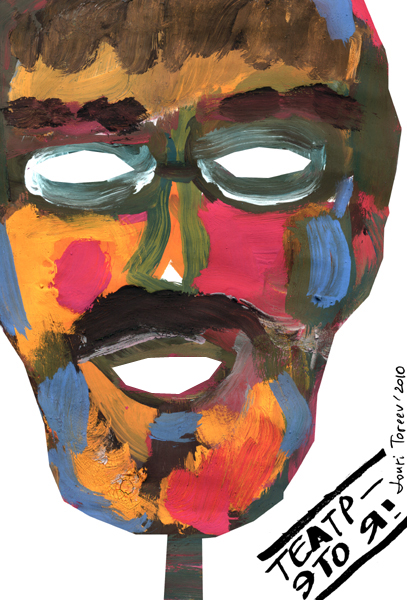
63.
Чем объяснить неувядаемый интерес человечества всех времён к старинной драматургии? Думаю, что ответ таков: хороший (а тем более великий) драматург всегда говорит о человеке и его насущных проблемах, а они в общих чертах одинаковы во все времена. Потому и волнуют современного зрителя невзгоды царя Эдипа, мстительность Гамлета, ревность Отелло, самоотверженность Аиды, обманутая любовь Чио-Чио сан, душевное благородство Сонечки, её глубокая вера…
Естественно, каждый режиссёр подчёркивает в пьесе какой-либо близкий ему аспект темы — потому и стало возможно разнообразие режиссёрских решений того или иного спектакля. Художник, создающий театральную афишу, также имеет право на своё личное прочтение пьесы. Он передаёт свои мысли и чувства в пластических образах, посредством формы, композиции и цвета.
Юрий Тореев создал большое количество театральных плакатов — как в законченном виде, так и в эскизах. И везде образы, созданные им, отличаются индивидуальностью вúдения и точностью выражения мысли.
Так, например, «Гамлет» (рис. 64): хрестоматийная трактовка образа — талантливый, изобретательный, отцелюбивый, но нерешительный человек, терпящий неудачу, то есть гибель. Современный человек может оценить личность принца Датского иначе. В нём (Гамлете) есть то, что особенно ценится в человеке ХХ — ХХI века: настойчивость в достижении цели, готовность добиваться осуществления своего замысла любой ценой, умение пользоваться людьми и обстоятельствами в своих интересах. Разве это не идеал современного человека — деятеля, творца, манипулятора людскими душами?
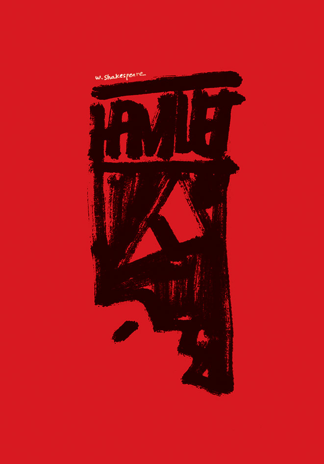
64.
Именно такой образ создал Юрий Тореев в своём плакате «Гамлет». Мы видим профиль мужского лица, как бы сконструированный из деревянных деталей: динамичный, слегка наклонённый в упорном движении, с острым взглядом огромных глаз. Голова его увенчана короной с именем; корона неотделима от головы и составляет её продолжение. Это символ его борьбы, цель его жизни. В то же время Гамлет — страдалец. Он страдает от скорби по отцу, от гибели любимой женщины, от непосильной борьбы с обстоятельствами. Поэтому Юрий Тореев создаёт другой плакат с портретом Гамлета — диаметрально противоположного смысла (рис.65).
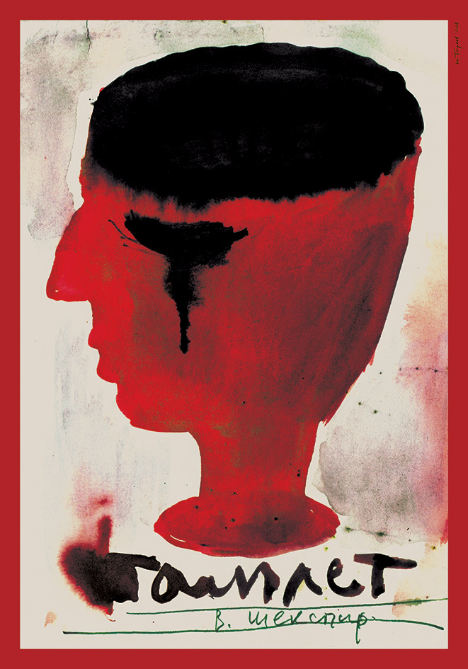
65.
Этот второй портрет — подобие сосуда, наполненного черной мерзостью сомнений и отчаяния; глаз источает чёрные кровавые слёзы, голова еле держится на тонкой шейке. Это Гамлет, так сказать, с изнанки. Потому и бессмертен этот образ, что он жизнеподобен — в нём есть всё, как и во всяком человеке (но в каждом — в разных пропорциях).
«АИДА» Джузеппе Верди — один из лучших театральных плакатов Юрия Тореева. Увидев этот плакат, зритель ощутит, чтo предстоит ему увидеть и услышать в зрительном зале: страшную силу деспотической власти, для которой жизнь человека — ничто. Эта власть готова растоптать всё самое ценное — любовь, преданность, молодость, красоту… Всё это гибнет по произволу фараона под многотонными глыбами камня, в тесной каменной клетке, где царит непроглядный мрак. Художник нашел верные средства для выражения неотвратимости и ужаса судьбы героев — всего лишь одно слово «Аида» и три цвета — чёрный — тяжесть деспотии и мрак могилы; красный — цвет смерти, крови, жестокости; белый — цвет вечного покоя и вечной памяти.
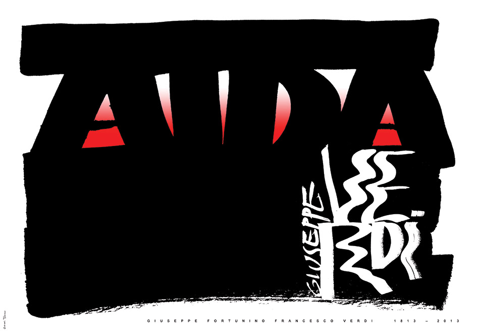
66.
Второй плакат на тему «Аиды» Верди — это архитектурное сооружение из циклопических черных камней, под которыми обречены гибнуть жертвы жестокости фараона. На втором плане виднеются тонкие стебельки с венчающей их черной точкой — головкой. Что это? Души погибших от царского произвола, или чахлые цветы зла, пробивающиеся между камнями, или раны на телах жертв со струящейся из них кровью. Вы можете принять любой вариант — ведь все они одинаково трагичны.
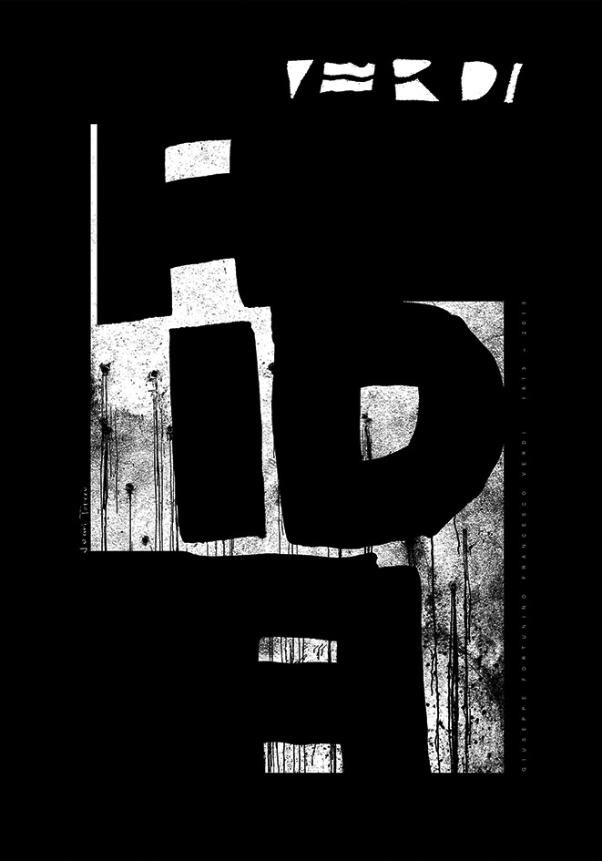
67.
«Отелло». Эту картину не выдерживает взгляд: на вас смотрят красные глаза, раскалённые ужасом, глаза человека, попавшего в западню Сатаны. Он гибнет — по вине неотвратимой судьбы, рокового стечения событий и по вине своей собственной слепой доверчивости. Он поверил клевете негодяя, совершил убийство — и погиб от собственной руки.
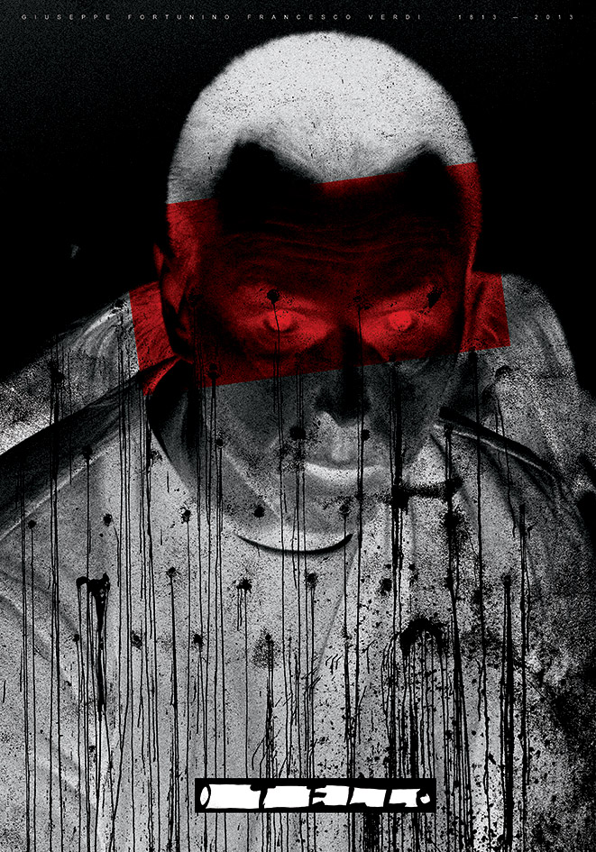
68.
В фильме С. Юткевича «Отелло» один из заключительных кадров — горящие белым светом глаза Отелло во весь экран. Юрий Тореев точнее выразил трагизм заключительной сцены — глаза светятся красным светом на фоне чёрного лица и фона.
Шрифтовой плакат к этому же спектаклю (рис. 69) по-своему также предельно-выразителен. Здесь огромная буква D зияет, как глаз героя, расширенный от ужаса, а черные птицы застыли в скорбном молчании над могилой Отелло.
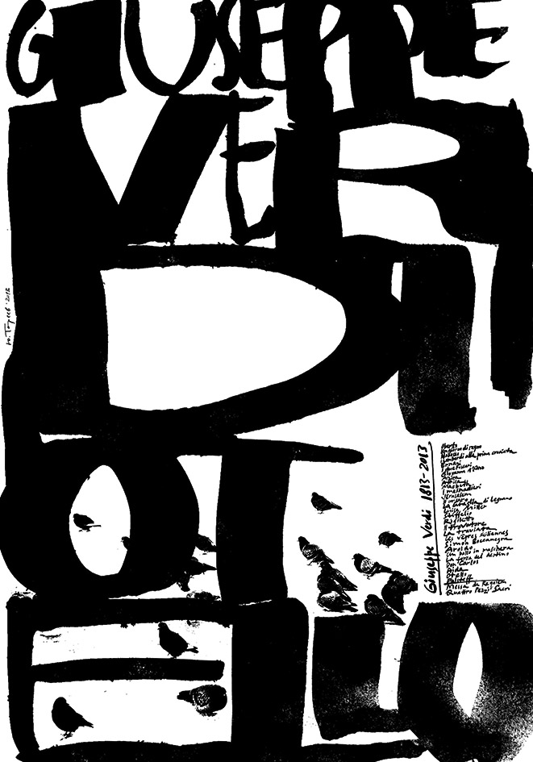
69.
Древнегреческие трагедии продолжают потрясать сердца людей вплоть до нашего времени. Трагедия Эсхила «Царь Эдип» (рис. 70) убеждает человечество во всесилии воли богов. Что суждено, то и сбудется, и человек не в силах побороть судьбу. Однако, история Эдипа подсказывает также другой вывод: царский трон не бывает незыблемо-прочным. Он всегда стоит на трясущихся гнутых ножках, он вибрирует — и готов в любой момент развалиться. Об этом свидетельствует тысячелетняя история человечества. Даже мудрейший из мудрых царь Соломон однажды оказался игрушкой в руках судьбы и чуть не погиб, лишившись царства и родины. А его отец царь Давид изливал перед Господом Богом горькие жалобы: «Я пролился, как вода; все кости мои рассыпались; сердце моё сделалось, как воск, растаяло посреди внутренности моей (Пс.21:15). Художник Юрий Тореев выразил в театральном плакате «Царь Эдип» именно эту, актуальную и для наших времён идею: непрочность власти деспота.
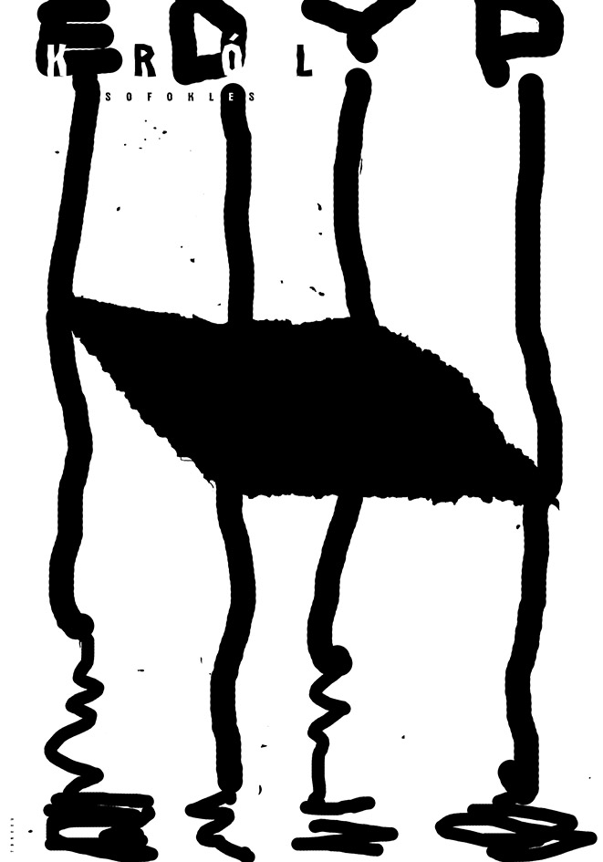
70.
«Сонечка» — спектакль по роману Ф. Достоевского «Преступление и наказание». Идея романа выражена в плакате Юрия Тореева через символы — топор и крест. Этот русский роман (и спектакль) опровергает старинную мысль античных и ренессансных трагиков о неотвратимости судьбы и обречённости преступника. Покаяние и молитва могут спасти его душу от адских мучений в этой жизни и после смерти. Лаконичный и убедительный символ создал Художник: топор, превращающийся в крест. Уверена, что автор романа одобрил бы эту работу Юрия Тореева.
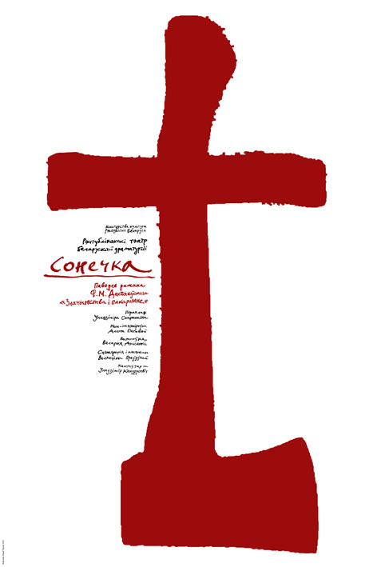
71.
Белорусская сценография
Плакаты, посвящённые белорусскому театру, исполнены рукой зрелого мастера, который умеет вникнуть в тему до самых глубин и выразить сложнейшие мысли и чувства простыми средствами.
На плакате «Сымон-музыка» (рис. 72) мы видим стилизованный корпус скрипки — такой же простой, сильный и правдивый, как деревенский мастер, изготовивший её, как самоучка-музыкант, извлекающий из неё волшебные звуки. Эта скрипка поёт о родной земле, её полях и лесах, о её небе, цветах и птицах. Она поёт о людях, проводящих жизнь в непрерывном труде и твёрдо верующих в Закон, в Бога. Эти люди чисты душой, как белое голубиное перо, упавшее на струны, хотя иной раз тяготы жизни и нужда исторгают из их уст недоброе слово.
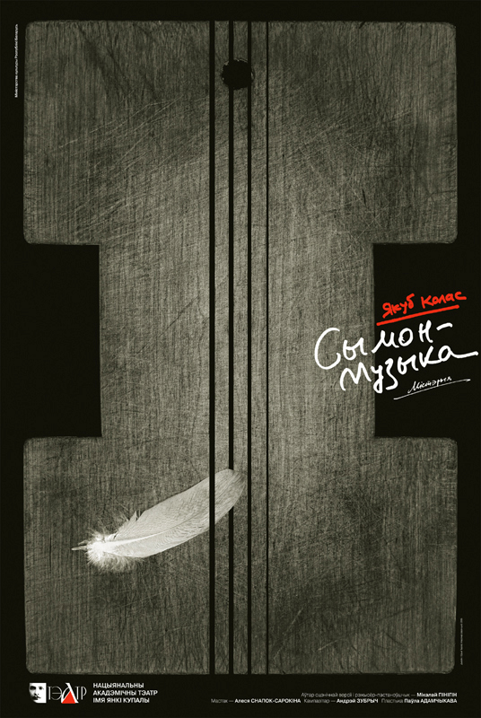
72.
Деревенский мальчик Сымонка — лучший представитель народа. Он тот праведник, без какого ни одно село не стоит. Он — душа народа, чистая и высокая, не повреждённая невзгодами жизни. Скупые серо-черные краски плаката, суровые прямоугольные контуры скрипки и ярко сияющее на этом фоне белоснежное перо — всё это без слов говорит о жизни белорусского народа и судьбе его лучшего сына — Сымона Музыки.
К этому решению плаката Юрий Тореев пришёл не сразу. В начале работы мысль его была занята образом скрипки как центральной фигуры сюжета. (рис. 73) Однако после нескольких вариантов рисунка с мотивом скрипки или пера появилось более точное решение композиции и фактуры плаката.
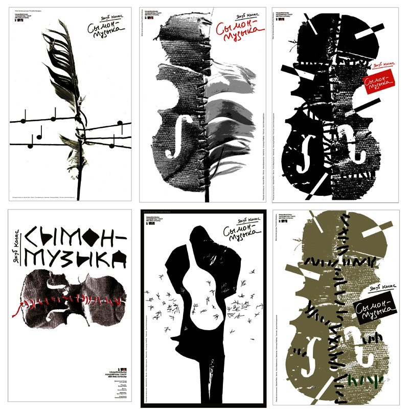
73.
Тщательные поиски предшествовали также созданию плаката «Вечар» к спектаклю по сценарию А. Дударева. Здесь сразу определился основной мотив — руки, хранящие землю, создающие всё для жизни. Художник создал девять вариантов решения и, наконец, пришёл к самому верному (рис. 74, 75).
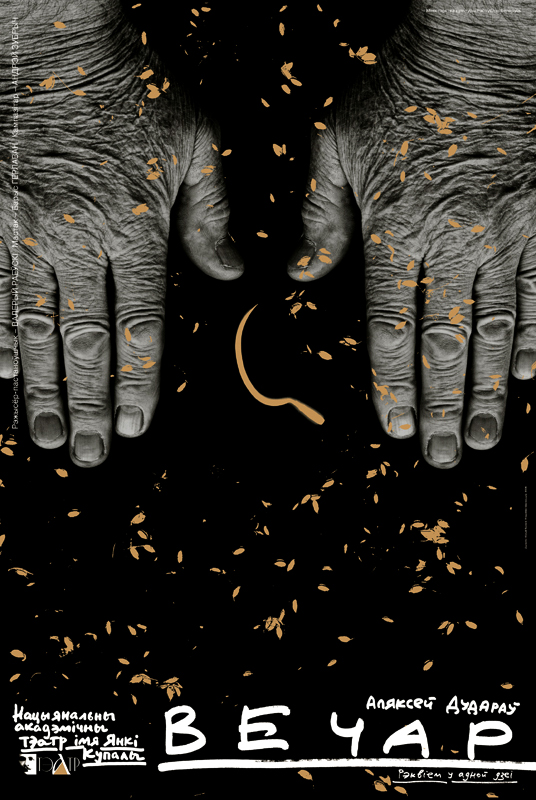
74.
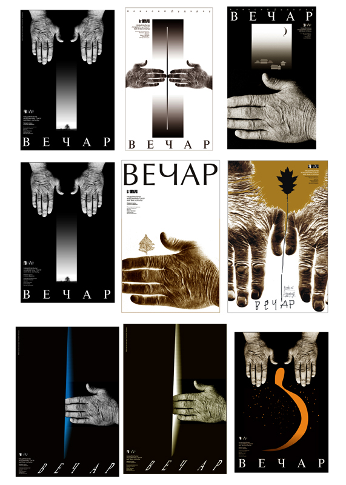
75.
- Натруженные крестьянские руки
- Покоятся на небе, как и на земле
- Земля их греет, благодарит за заботу, родит хлеб
- А узенький серп в небе улыбается
- Как месяц в четвёртой четверти
- Умирает деревня, осталось три хаты
- А в них три старика.
- Брошены они, забыты детьми
- Но каждый день выбирают воду из колодца
- Чтобы не испортилась
- «И сегодня надо жить»
- «С тобой, с землёй и с людьми»
- Покоятся на небе, как и на земле
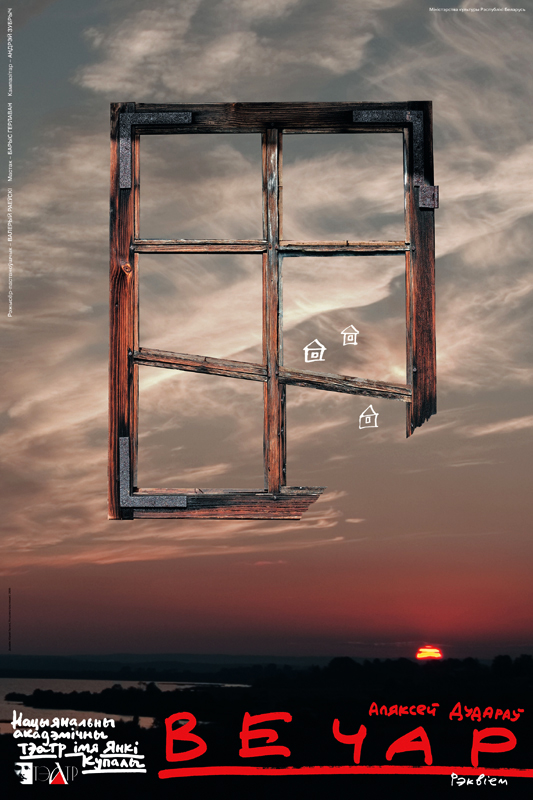
76.
Трагедия нашего времени — умирающая деревня.
Исчезновение целого класса — крестьянства, носителя мудрой и своеобразной культуры, хранителя Земли. Вечер трудно прожитого дня — не последний ли он? Хмурое небо, ветрено, холодно… Багровый закат угасает над чёрной землёй. Три сирые хатки ещё доживают свои дни. Одна уже осталась без хозяина. Душа его улетела в небо, а внутренность избы воссоединилась с мировым пространством.
Такие мысли пробуждают плакаты Юрия Тореева, посвящённые белорусской драматургии.
Дипломные работы студентов кафедры графического дизайна БГАИ также представляют собой вклад в «скарбонку» белорусской культуры. Защита дипломных проектов — немалое событие в жизни страны, достойное профессиональной художественной рекламы. И кому же, как не Юрию Торееву, воспитателю молодых талантов, выпало на долю рекламировать их труды? Своеобразно подходит Художник к теме. Его рекламные плакаты лишены какого бы то ни было налёта официального «мероприятия» казённого «парада благополучия». На плакате «Просмотр лето 2013» (рис. 77) мы видим яркую аллегорию студента, выставляющего на просмотр свои работы. Он (студент) уподобляется проросшей картошке, полежавшей некоторое время в подвале.
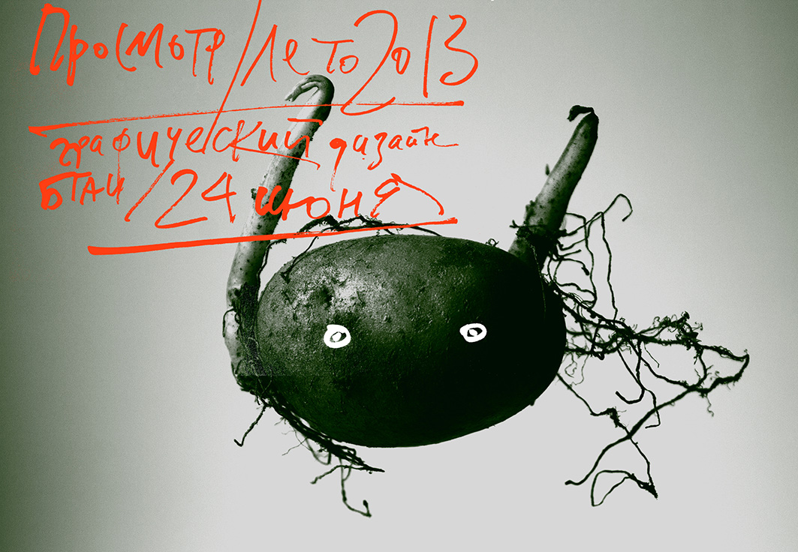
77.
Он почернел от недосыпания и напряжения, он взлохмачен (некогда причесаться), уже ничего не соображает, глаза смотрят бессмысленно, как у рыбы. Ему не до своей внешности — он провёл две бессонные ночи, спешно заканчивая проект. Зато успел выдать продукт — два сочных стебелька с зародышами листьев.
Некоторые афиши о защите дипломных проектов раскрывают тайны процессов их «производства». Например, плакат (рис. 78) написан, по-видимому, кровью. Это кровь студентов, отданная ими в борьбе за получение диплома. Пусть Художник со свойственным ему чувством юмора несколько заострил ситуацию — всё же в этом плакате есть доля правды.
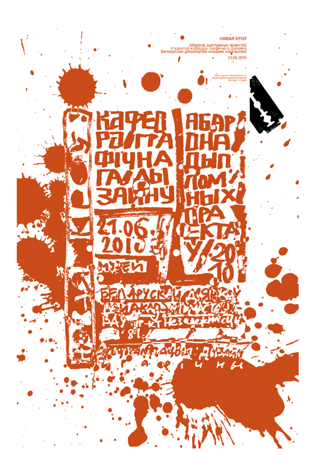
78.
На плакате (рис.79) показан совсем другой сюжет — выход студента «в свет» со свежеиспеченным дипломом (по специальности «театрально-декорационная живопись»). Путь молодого человека труден и опасен. Он идёт по острой грани между светом и тенью, добром и злом. Он одинок в пустыне жизни — всё зависит от его труда, таланта и ума. Понимая это, он шагает бодро и энергично. Половину пути он уже прошёл. Счастливого ему продолжения!
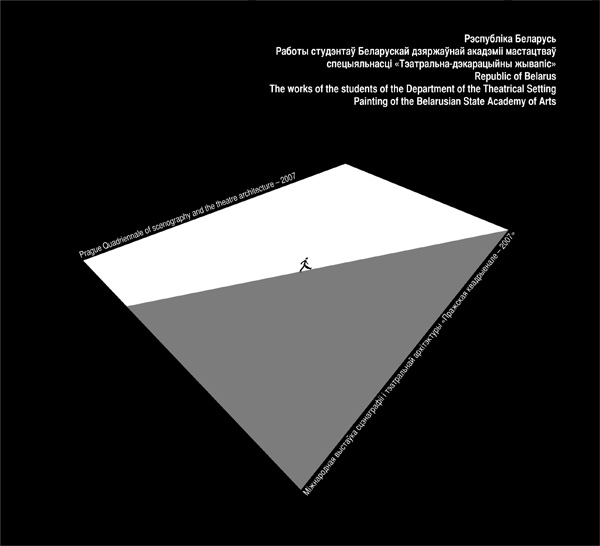
79.
Музыка
В своё время король Франции Людовик XIV изрёк крылатую фразу: «Государство — это я». Фредерик Шопен с полным правом мог бы сказать: «Музыка — это я». Искусство великого композитора вдохновило Юрия Тореева на создание одного из лучших плакатов: «Fryderyk Chopin 1810-2010». Двести лет звучит музыка великого композитора. Она заполняет небо, она не касается земли. Она улетает в пространство, её понимают птицы. В ней жизнь, огонь и страсть, в ней беспредельность мира, полёт в бесконечность, в неизведанные высоты. (рис. 80)
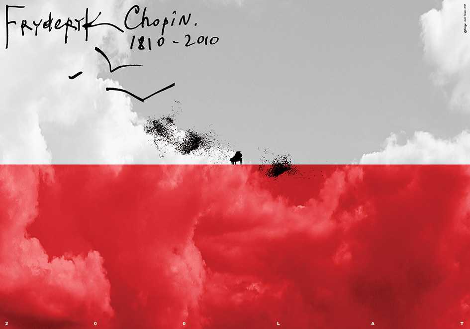
80.
Всё это читаем на огромном полотне, называемом «Фредерик Шопен»
Джаз
Уважаемый читатель! Я знаю, Вы любите джазовую музыку. И даже если Вы предпочитаете бибоп или авангардный джаз — Вас не оставят равнодушными добрый старый блюз или джангл-стиль.
В плакатах Юрия Тореева мы видим то, что характеризует джазовую музыку — ритмичность, мелодичность, чёткость фразировки, апелляцию к интимным чувствам человека (благодаря чему джазовая музыка стала незаменимой в местах отдыха и развлечений — проще говоря, в ресторанах).
В эскизе плаката «Фестываль джазовы» мы ощущаем стремительность и спонтанную лёгкость этой музыки (рис. 81). Рисунок создан методом импровизации, подобно тому, как импровизируют на сцене джазмены, а три спирали вызывают ассоциации с вращательными движениями негритянских танцев и кудрями на головах музыкантов.
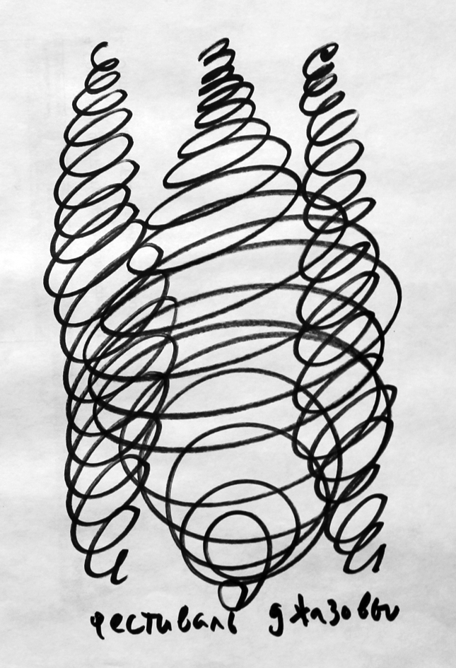
81.
Эскиз 13 (рис. 82) внушает ощущение знойной атмосферы африканских вечеров (и духоты гарлемских ресторанов), где звенят медные трубы и завывают плаксивые саксофоны, где вино течёт рекой и душа не в силах сопротивляться магии дикарских мелодий.
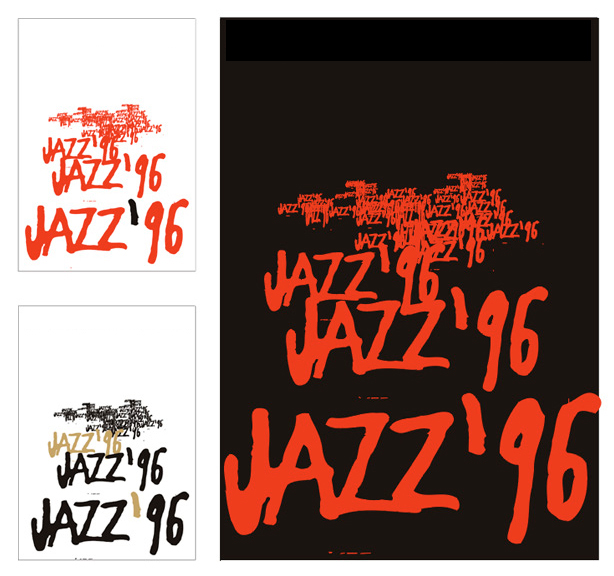
82.
В нашем прохладном климате африканские напевы звучат не так покоряюще. Джазовая музыка радует нас главным образом своей непохожестью на нашу отечественную. Для нас это — экзотическая райская птица, которая бьётся, пойманная в сети. У нас ей не летать — спутаны крылья, как буквы на плакате, зачёркнуты жирным фломастером, как будто концерт запрещён, или кому-то показался неугодным (рис. 83).
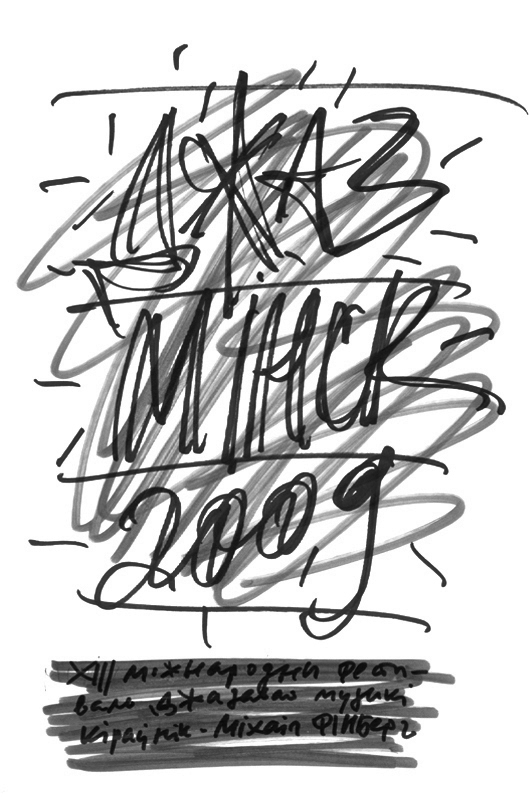
83.
Плакат «Кабаре» рекламирует музыку и танцы для публики массового типа (рис. 84). С плаката на нас смотрят глаза женщины-вещи, женщины-забавы для мужчин с невзыскательным вкусом (мягко говоря). Она втайне страдает, она лишена нормального женского счастья. В Третьем рейхе кабаре были самым популярным развлечением для солдат и офицеров нижних чинов.
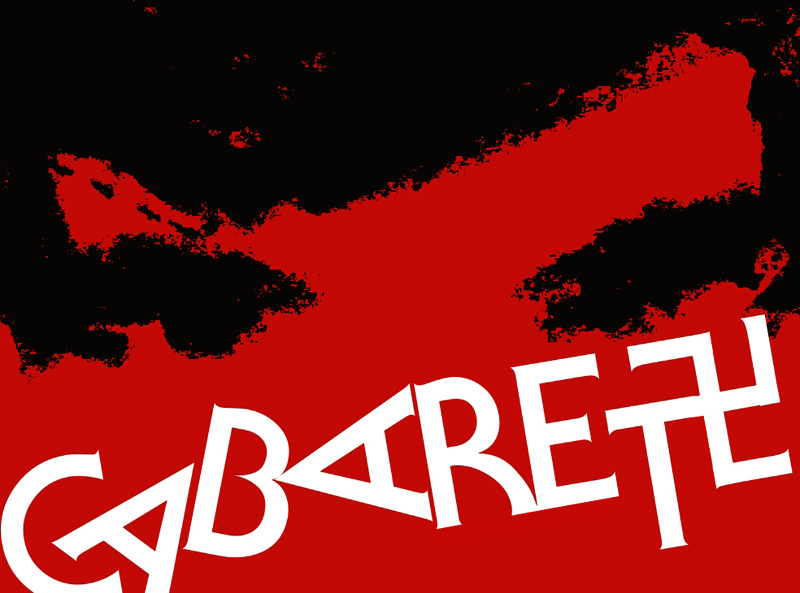
84.
Не случайно слово «Cabaret» заканчивается свастикой. Художник явно осуждает этот жанр зрелищ (не хочется называть его искусством).
Л. Миронова,
03.04.2014